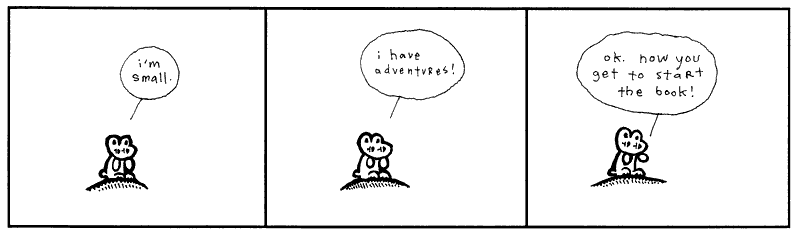

Эльф і яго рулька-гадаванец!
Жырафа аточаная чараўнікамі!
Мікраскапічныя канаркі! Ды гэты гайд — сапраўднае адлюстраванне рэальнага жыцця!
//Прамы эфір, 2012 год// Дзякуючы Чамучкінаму Замілавальнаму гайду...
...нават немаўляткі могуць вывучыць Рубі! Настолькі гэта проста!
class << self!

Я глыбока крануты гэтай дзіўнай кнігай - замілавальным Кіраўніцтвам Чамучкі.
Сур'ёзна. Унутры мяне квітнее квецце.
Быццам усе пустоціны майго цела прамазаны авакада пад узбітым маянэзам.

Я маленькі.
Увесь час трапляю ў прыгоды.
Добра. Зараз можаш пачаць чытаць кнігу.